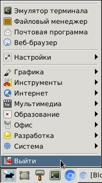
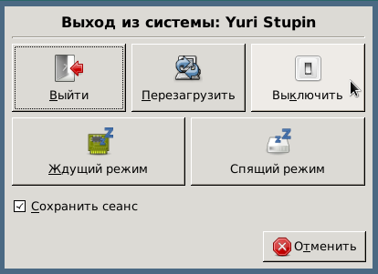
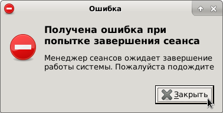

Столкнулся на одном из компьютеров со странной проблемой - не удаётся выключить компьютер через меню XFCE:
В открывшемся диалоговом окне выбираем "Выключить":
Кнопка нажимается успешно, но вот дальше ничего не происходит.
Последующие попытки повторить те же действия приводят к ошибке. После нажатия пункта "Выйти" в меню XFCE появляется сообщение об ошибке:
Процитирую надпись с картинки: "Получена ошибка при попытке завершения сеанса. Менеджер сеансов ожидает завершение работы системы. Пожалуйста подождите". Не буду сейчас придираться к грамотности сообщения (Ошибка не получена, а произошла. Ожидает чего? Завершения. "Пожалуйста, подождите").
На всякий случай, приведу также сообщения на английском языке: "Received error while trying to log out. Session manager must be in idle state when requesting a shutdown"
Сколько ни искал в интернете решения проблемы, ничего годного найти не смог. В итоге помогло... Чтение журналов! В домашнем каталоге пользователя есть журнал .xsession-error, в котором моё внимание привлекли две подозрительные строчки:
/etc/xdg/xfce4/xinitrc: 85: /etc/xdg/xfce4/xinitrc: xrdb: not found ** (xfce4-session:4149): CRITICAL **: polkit_unix_process_set_property: assertion 'val != -1' failed sh: 1: /usr/bin/iceauth: not found
Я поискал, в каких пакетах находятся недостающие файлы xrdb и iceauth:
$ apt-file search xrdb | grep /xrdb$ bash-completion: /usr/share/bash-completion/completions/xrdb x11-xserver-utils: /usr/bin/xrdb $ apt-file search iceauth | grep /iceauth$ x11-xserver-utils: /usr/bin/iceauth
Как видно из результатов поиска, оба файла находятся в пакете x11-xserver-utils. Установим недостающий пакет:
# apt-get install x11-xserver-utils
Принудительно перезапустим дисплейный менеджер:
# systemctl restart lightdm
Пробуем выключить компьютер снова - теперь всё получается!